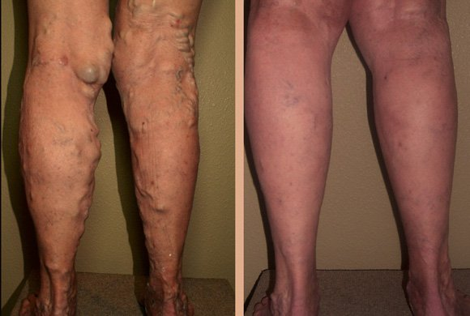
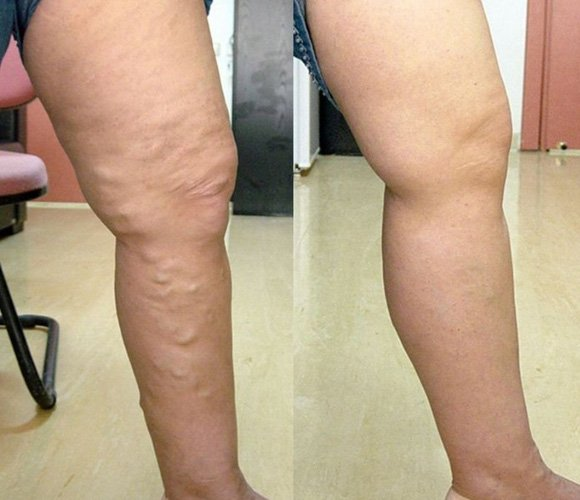

Az unokáim kedvéért szabadultam meg a visszértől!
Krisztina
Ma végre elmesélem nektek, hogyan szabadítottam meg a lábamat a szörnyű szenvedéstől, a visszerektől, és hogy mi vezetett ahhoz, hogy ezt tegyem.
Hogyan jelentek meg a visszerek az életemben
61 éves koromig szinte nem is éreztem az évek múlását. Mindig elégedett voltam az életemmel, csodás, hatalmas kerttel rendelkező otthonomban. Nem volt szükségem segítségre, mert az egészségem engedte hogy egymagam elvégezzem a házimunkát, különösen most, hogy egyedül élek ebben a házban. És aztán – kérdezhetnétek – miért van minderre szükséged? A legnagyobb öröm akkor ért, amikor a lányom eljött az unokáimmal együtt meglátogatni engem. Amikor megérkeznek a városból fáradtan, éhesen és elgyötörten, szeretem megkínálni őket a saját főztömmel, amit a saját földemen termelt zöldségekből és gyümölcsökből készítek. És persze csomagolok is nekik ételt hazulra, mert mostanában a boltokban csak vegyszerekkel kezelt gyümölcsöket és zöldségeket lehet találni. Az enyémek pedig tiszták és egészségesek.

És nézzétek csak: 61 évesen elkezdtem észrevenni, hogy egyre láthatóbá válnak az erek a lábamon. Először nem is annyira látszottak, ám ahogy teltek a hónapok nemcsak láthatóvá váltak a bőröm alatt, hanem elkezdtek bedagadni , méghozzá annyira, hogy úgy néztek ki, mint a csövek. Amellett, hogy feldagadt a lábam, gyötrő fájdalomtól szenvedtem, amit nem bírtam elviselni.

Hogyan változott meg az életem a visszerek miatt
Ugye szükségtelen megemlítenem, hogy a kerti munka ezután lehetetlenné vált? Már nem is bírtam felmenni a ház második emeletére, mert minden egyes lépcsőfok megtétele felért egy rémálommal. A fájdalmat legyőzve, nagy nehezen tovább termesztettem az uborkát, a paradicsomot és az almát az unokáimnak.
A lányom kérlelt, hogy költözzem a városba és hagyjam abba a kerti munkát, de én mindig is gondoskodni akartam a családomról és sajnáltam volna, ha ott kell hagynom – szégyen lett volna a kertben végzett munkámra nézve. Visszautasítottam . Az lett az eredménye, hogy terményeim egy része nem hajtott ki, egy másik része meg megrohadt, mert nem bírtam leszedni.

A lányom továbbra is ellátogatott hozzám az unokáimmal, de most már arra kérlelt, hogy feküdjek be a kórházba, vagy hogy vonuljak be öregek otthonába, ahol valaki a gondomat tudja viselni. Iszonyúan megsértődtem rá! Annyira szerettem volna visszakapni mindent, amim azelőtt volt, amikor a lányom még nem úgy tekintett rám, mint egy #magatehetetlen, hasznavehetetlen öregasszonyra. Annyira szerettem volna valakit, akinek szüksége van rám, meg akartam szabadulni a gyötrő fájdalomtól és a betegségtől, mely egyre inkább a hatalmába kerített.
Visszér elleni kezelést keresgélve
Azt hihetnétek, hogy abban az évben meg sem próbáltam megszabadulni a visszértől, pedig ez nem igaz. Információt kerestem az interneten, megkérdeztem a barátaimat, a rokonaimat. Még népi gyógymódokat is kipróbáltam (speciális kenőcsöket készítettem, pakolásokat használtam), pirulákat szedtem, kipróbáltam néhány visszér elleni krémet, de mindezt hiába, semmi sem segített. Egyik gyógykészítmény sem enyhítette a fájdalmamat, sőt a visszereim sem lettek tőlük kisebbek. Már csak az a választási lehetőségem maradt, hogy elmegyek az orvoshoz, de féltem, mert azt hittem, beutalnak a kórházba. De nem volt más alternatívám. Az unokáim kedvéért bevonultam a kórházba.
Mit mondott az orvos
Teljesen lenyűgözött az orvos, amikor a lábamra pillantva így szólt: "Ez egy hét alatt begyógyul!" De hiszen én már olyan régóta nem bírok megszabadulni ettől a szörnyű dologtól! Kezembe adott egy cetlit, amire felírta a nevű krémet, valamint annak a honlapnak a címét, ahonnan meg tudtam rendelni. Elmagyarázta nekem, hogy még a gyógyszertárakban is csak hamisítványt árulnak, viszont a gyártó honlapján kizárólag eredeti, ellenőrzött terméket lehet vásárolni.
Rövidre fogva elmondta nekem, hogy a kizárólag természetes összetevőket tartalmaz, ezért pedig más, vegyszereket tartalmazó termékekkel ellentétben, nagyon könnyen felszívódik a bőrbe. Behatol az erekbe és eltávolítja a dagadás, az értágulat okát, így az erek visszanyerik eredeti állapotukat. Továbbá ez a teljes szervezetre biztonságos készítmény még az én koromban is, ami a természetes összetételének köszönhető.
Ezért hát azonnal megrendeltem ezt a krémet, éás már az első használatot követően éreztem a hatását: gyengéden lehűti a bőrt, megszünteti fájdalmat és ellazítja a lábat. Reggel és este kellet használnom. Szándékosan készítettem egy "előtte" képet a kérém használata előtt, hogy kiértékelhessem a hatékonyságát.

Az eredmény
egész egyszerűen maga a csoda! Miután 10 napig használtam ezt a krémet, a fájdalom teljesen eltűnt. Most már ismét aktív vagyok, kertem pedig visszakapta a gondos tulajdonosát :)
Boldog vagyok, hogy ismét olyan nagymama lehetek, akit a gyerekei és unokái velük egyenlő emberként kezel, nem pedig egy magatehetetlen valakiként.
Ismét azzal foglalkozhatom, mit a legjobban szeretek és élvezem, hogy együtt tölthetem az időt a szeretteimmel. Apropó észrevettétek, hogy az erek teljesen eltűntek ? Most már legalább az unokáim nem ijednek meg a lábamtól.
Legyetek egészségesek!
Krisztina


Hozzászólások
Sándor
Valóban, ez a krém az egyedüli hatékony gyógykészítmény visszér ellen, amiről én is megbizonyosodhattam a karrierem során. 18 évig egy vámházban dolgoztam, ahol reggeltől estig állnom kellett. A kollégáimnak és nekem is szükségem volt visszér elleni kezelésre. Ma már kapásból ezt a krémet ajánljuk minden új alkalmazottnak, aki ezzel a problémával kénytelen szembesülni. Ahogy azt valószínűleg önök is tudják, lehetetlen beteg lábbal egész nap állni, de a mindig segít.
Ibolya
Nekem a terhességem alatt alakult ki visszerem. Nincs lehetőségem drága orvosokhoz menni, ezért próbáltam meg mindenféle, boltban fellelhető gyógyszerrel megszabadulni ettől a szörnyű dologtól, de minden hiába volt. Az ötödik gyógykészítmény, amit kipróbáltam épp a krém volt, amit a nővérem ajánlott. A lábam egy hét alatt épp olyan jó lett, mint amilyen volt.
Laura
Köszönöm, hogy megosztottad velünk a véleményedet. Én is pont egy visszér elleni hatékony gyógyírt kerestem. Már meg is rendeltem. Mennyi idő után veszi észre az ember az első eredményeket?
Dr. Szabó János, sebészorvos
Laura a krém általában már az első használat után enyhíti a fájdalmat, az erek mérete pedig már 3 nap múltán lecsökken. A kezelés időtartama a teljes gyógyulásig attól függ, mennyire vannak megdagadva az erek.
Veronika
Anyukámtól örököltem a visszeret, aki fiatal korában ugyanúgy szenvedett tőle. Nekem nem voltak annyira megdagadva az ereim, de azok az ijesztő seprűerek nem nyújtottak valami nagy esztétikai élményt. Megrendeltem a -et, és egyáltalán nem bántam meg. Egy hét múlva már el is szaladtam a plázába és megvettem az összes olyan ruhát, amit szégyelltem felvenni a visszértágulás miatt.
László
A munkám miatt lettek visszeresek a lábaim. Köztudott, hogy az építkezéseken súlyokat kell emelgetni, épp ezért sokkal nagyobb annak a kockázata, hogy láberek megdagadnak. Ennek aztán az lesz az eredménye, hogy a pokoli fájdalomtól nem bírsz dolgozni, és állandóan a zsebedben kell tartanod egy üveg fájdalomcsillapítót. De mégsem szedhet az ember állandóan pirulákat! Amikor felvettek egy másik építkezésre, az újdonsült kollégáim elmondták, hogy minden építőipari munkás ismeri a krémet, és egyedül ez menti meg őket. Habozás nélkül én is megrendeltem. 2 hét múlva már nem volt megduzzadt erem és a fájdalom is eltűnt.
Angéla
Kézfejre is lehet használni, hogy az erek ne vastagodjanak meg?
Dr. Szabó János, sebészorvos
Hát persze, Angéla! Sok betegemnek javasoltam már, hogy használják a krémet arra, hogy simává és szépé varázsolják a kezükön lévő bőrt.
Mária
Nálam a visszér a korral együtt jött. 53 évesen a lábaim valami szörnyűséggé alakultak át, szinte képtelen voltam járni a fájdalom miatt. Ennek a krémnek hála sikerült kikúrálnom a lábaimat, így végre már nem ijesztem meg velük az unokáimat többé. A fájdalom is eltűnt, és helyette inkább megkönnyebbülést érzek.
János
Nyugodtan állíthatom, hogy a szó szerint megmentette az életemet! Örököltem a visszért. Ez a probléma nem igazán izgatott, mert nem gyakran hordtam rövidnadrágot, és strandra se jártam. De egyszer annyira bedagadtak az ereim, hogy kritikus állapotba kerültek. A kórházban az orvos azt mondta, hogy sürgősen el kell kezdenem használni a krémet, máskülönben amputálniuk kell a lábamat. 3 hét múlva a visszereknek már nyoma sem volt. Barátaim, ne hanyagoljátok el az egészségeteket, amilyen hamar csak lehet, kezeljétek a problémáitokat!

Barnabás
Naponta hányszor kell használni a krémet a visszértágulat előrehaladott állapotában? A bőröm már úgy lóg, mint egy fürt szőlő!
Dr. Szabó János, sebészorvos
Barnabás, általában naponta kétszer ajánlott használni a krémet, mert a hatása rendkívül erős, de súlyos esetben napi háromszori használat javallt azonos időközönként.
Lilla
Nem sikerült elkerülnöm a visszereket a terhességem ideje alatt. A babaám nagyon nehéz volt, ráadásul túlhordós is voltam. Az ereim annyira feldagadtak, hogy pár számmal nagyobb ruhákat kellett vennem. A lábaim pedig iszonyatosan fájtak! A terhesség utolsó pár hetében az idő túlnyomó részét tolószékben töltöttem, mert képtelen voltam járni. A krémet a férjemtől kaptam ajándékba, amikor Magyarországon még nem lehetett kapni. Csak azért utazott el Amerikába, hogy megvegye nekem. Meggyógyította az ereimet, a fájdalmaim pedig kevesebb mint egy hónap alatt enyhültek. A krém hűsítő hatása nagyon kellemes volt a fáradt lábaimnak.
